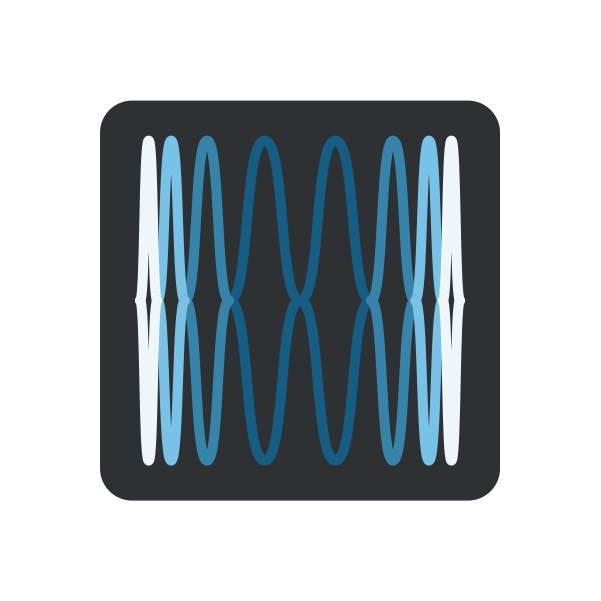
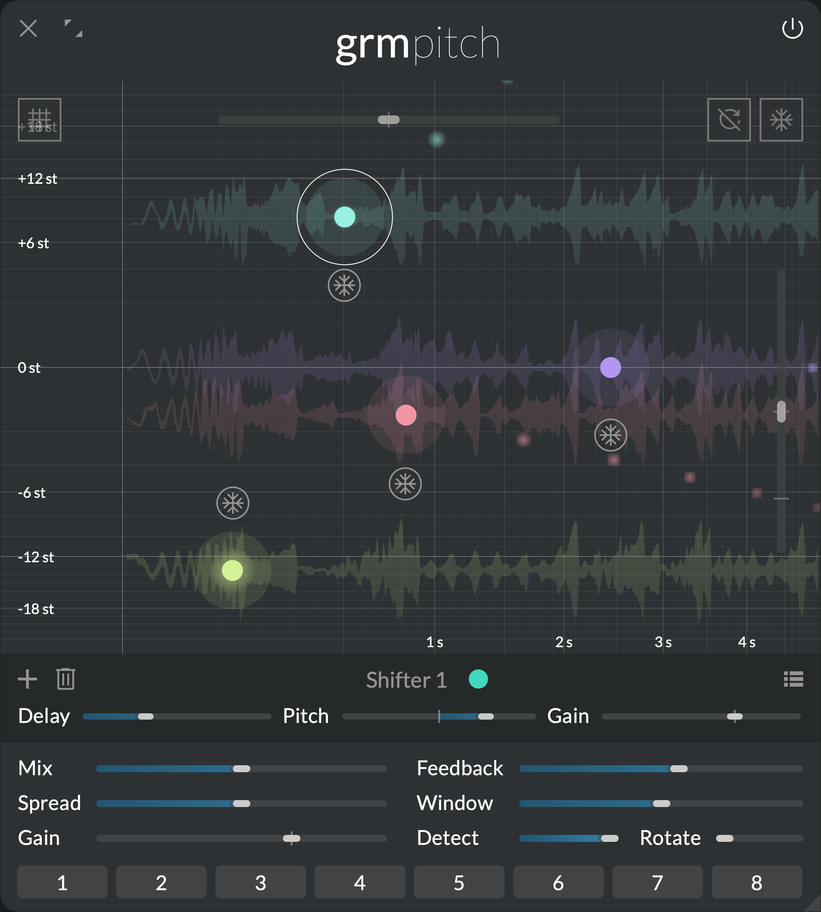

Not a pitch shifter

PitchThis section is a work in progress

A pitch shifter changes the pitch of a sound without changing its duration. On the surface, this is what Pitch is: a bank of pitch shifters combined with delays, placed on a 2D surface. But rather than delivering just this, Pitch breaks the concept apart and exposes it, piece by piece: granular playback into a buffer with variable speed, adjustable correlation detection, wide range of grain size...
Use it for old tricks (tuning or harmonize, thickening), or explore a wealth of novel ideas (very long or very short grains, disable correlation, modulate anything): Pitch is more than just what its name suggests.
Features
- Up to 8 pitch shifters/delays, placed on an intuitive 2D surface
- Transpose by a wide range range: from +48 semitones to -∞
- Delay by up to 10 sec
- Freeze the buffer and scrub inside it
Context
Feed a voice into Pitch, click to make a pitch shifter: the voice is well... transposed and delayed. But what actually happens is not magic: the input is recorded into the buffer like a tape, and the content of the buffer is cut into small grains. Two overlapping play heads continuously read the grains around the cursor (the delay time) at a speed proportional to the transposition required. Pitch shifting is just playing small overlapping grains of sound at a speed different than the recording speed!
This overlap/add mechanism is one of the oldest ideas in signal, and was even.
and each grain is replayed at a speed dependent on the . Grains are then overlapped
Controls
Cursor area
Click to add a pitch shifter; double-click a pitch shifter to remove it. All pitch shifter run in parallel with their own buffer, and are then mixed to the output.
- Quantize button: click to quantize all pitches to the closest semitone.
- Clear all buffers button: click to silence all delay buffers
The following parameters are local to each pitch shifter:
- Delay (X axis): Pitch shifter delay time.
- Pitch (Y axis): Pitch shifting amount. Sets the grains playback rate relative to normal rate.
- Gain (Z axis): Pitch shifter gain.
- Freeze button: Stops feeding audio into this pitch shifter buffer, and read current content in-place.
The following parameters have as many independently-modulatable instances as there are pitch shifters (see Modulation):
- Freeze button: Inverts the Freeze state of all pitch shifters (see local Freeze parameter).
- Delay ratio: Scales all delays by the given ratio.
- Rate: Scales all pitches by the given ratio. Negative ratios mean reverse grain playback.
Global controls
- Mix: Crossfades between the dry (0%) and the wet signal (100%).
The following parameters have as many independently-modulatable instances as there are pitch shifters (see Modulation):
- Spread: Channel-locality of each pitch shifter. At 0%, each pitch shifter processes only the channels it is assigned to (see the global Spread section); at 100%, all pitch shifters process all channels in parallel (multi-mono).
- Gain: Global gain of all pitch shifters.
- Feedback: How much of each pitch shifter's output is reinjected into its input. Feedback is local to each pitch shifter
- Window: Duration of the pitch-shifted grains.
- Detect: Precision of the correlation detection. At 100%, a correction is applied to each grain starting position to correlate better with the currently playing grain to avoid phase cancellations. At 0%, this correction is disabled, resulting in an amplitude modulation-type effect.
- Rotate: Rotates the channels in the feedback path. At 0%, each channel's feedback paths is completely independent; at 100%, each channel feeds back into its successor and the last one feeds back into the first, resulting in a generalized ping-pong delay-like effect.